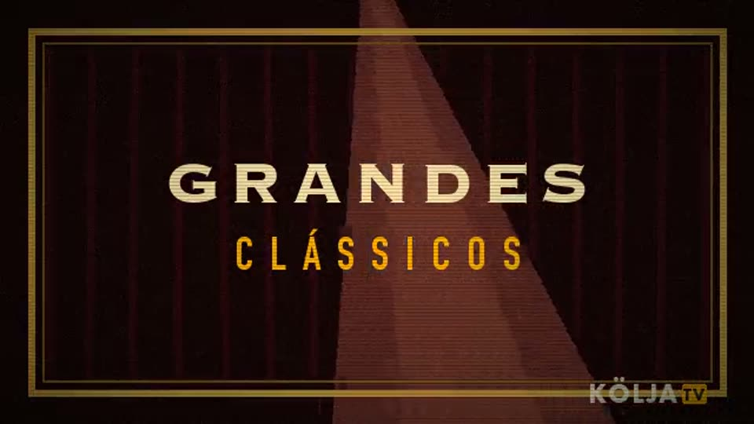
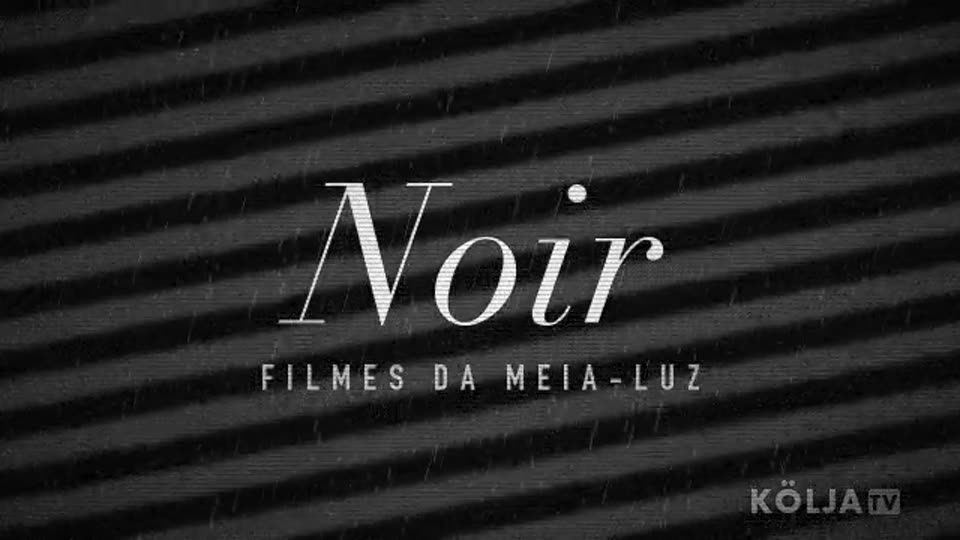
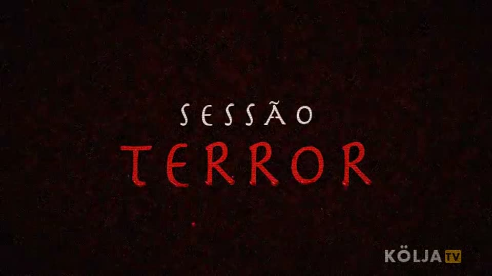
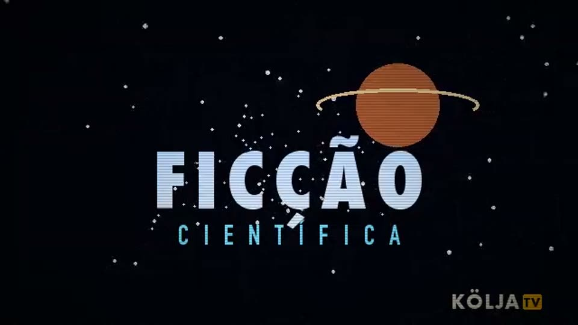

Uma TV de verdade, no ar o dia inteiro.
A KÖLJA TV tem grade, horário e intervalo. Ligou, pegou o que está no ar, na mesma hora que todo mundo.
O que passa
De manhã até o começo da tarde, desenhos clássicos. À tarde vem a matinê, com comédia muda, seriados, comédia e faroeste. À noite, os grandes filmes, aventura e depois o noir. De madrugada tem Sessão Terror, ficção científica, a Madrugada Cult e as séries clássicas.
É um canal só, o canal 1. Não tem catálogo para escolher nem botão de voltar: o filme começa na hora marcada, e se você chegou no meio, pegou do meio. Por isso a grade importa, e ela está sempre na Programação.
No ar desde 31 de outubro de 2026.
Hoje, hora a hora
Legendas feitas aqui
Parte dos filmes tem legenda em português e em inglês, feita por nós, e estamos fazendo mais. Na programação esses filmes levam o selo LEG. No player, o botão PT troca para EN ou desliga.
As vinhetas
Cada faixa tem a sua vinheta, e todas são feitas pela casa.




Contato
Sugestão de filme, problema no player, imprensa ou qualquer outro assunto:
contato@kolja.com.br